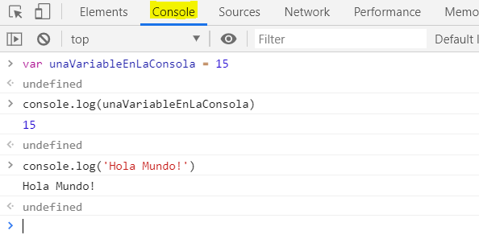
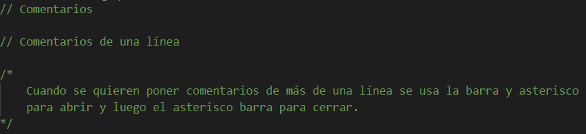
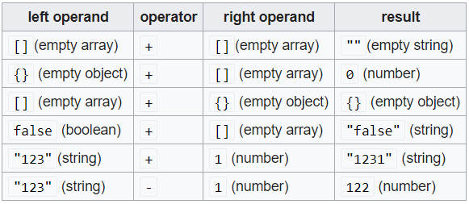
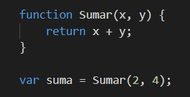

Introducción a Javascript
JavaScript es case-sensitive (distingue mayúsculas y minúsculas) y utiliza el conjunto de caracteres Unicode.
En JavaScript, las instrucciones son llamadas Sentencias y son separadas por un punto y coma ;.
La consola javascript
en chrome se accede presionando F12
Muestra información sobre la página web que se está ejecutando en el momento y también incluye una
línea de comando que puede ser utilizada para ejecutar expresiones javascript en la página actual.
La función console.log() muestra la información proporcionada
como parámetro en la consola de javascript, como por ejemplo en este caso podemos ver que se declara
una variable y se muestra por pantalla así como se muestra un literal "Hola Mundo!".

Comentarios
Para realizar comentarios en javascript tener en cuenta que se tiene dos tipos de sintaxis para
comentar:

Los comentarios son anotaciones en el código fuente de un programa que son ignoradas por el
intérprete. Los comentarios deben usarse para describir aspectos
importantes, por ejemplo algo que permita una mejor comprensión del código a otro
programador que tenga que entender la funcionalidad. Cuando el comentario no provee información útil
el comentario en sí no es útil y por tanto no debería siquiera estar presente. Otro punto es que
bajo ningún punto de vista se debe tener código comentado en un código fuente productivo ya que no
aporta absolutamente nada.
Declaraciones de variables en js
ver archivo "introduccion_js.js" líneas 1-27
Las variables se usan como nombres simbólicos para referenciar valores en la aplicación. Los nombres
de las variables, llamados identificadores, se rigen por ciertas reglas en javascript.
Un identificador en js tiene que empezar por una letra, un guión bajo (_) o un símbolo $, los
valores subsiguientes además pueden contener números.
Javascript diferencia entre mayúsculas y minúsculas (es case sensitive), por lo tanto las letras
incluyen desde "A" a la "Z" y desde la "a" a la "z".
-
var: Declara una variable, inicializándola opcionalmente a
un valor que se elija. Podrá cambiar su valor y su scope es local o global.
Ejemplo:var x = 2;. -
Otra forma de declarar una variable en javascript es simplemente asignando un valor. x = 2
Esto siempre declara una variable global y no puede ser cambiada a nivel local.
Esto genera una advertencia strict de JavaScript, por lo que no se debería usar esta variante. -
let: Declara una variable local en un bloque de ámbito
inicializándola opcionalmente a un valor que se elija. Podrá cambiar su valor.
Ejemplo:let y = 2;. -
const: Declara una variable de sólo lectura en un bloque
de ámbito. No será posible cambiar su valor mediante la asignación.
Ejemplo:const z = 2;.
Al intentar acceder a una variable no declarada dará como resultado la excepción ReferenceError.
Ámbito de una variable
Cuando se declara una variable fuera de una función se le denomina VARIABLE GLOBAL, porque está disponible para cualquier otro
bloque de código en el documento actual.
Cuando se declara una variable dentro de una función se le denomina VARIABLE LOCAL, porque está disponible sólo dentro de esa
función donde fue creada.
Variable Hoisting
Las variables en javascript pueden hacer referencia a una variable declarada más tarde y a este
concepto se lo conoce como HOISTING.
Las variables son "elevadas" a la parte superior de la función o la declaración.
Las variables que no se han inicializado todavía devolverán un valor undefined.
Tipos de datos básicos en js
ver archivo "introduccion_js.js" líneas 29-66- String Una cadena de texto. Para indicar que la variable es una cadena, debes escribirlo entre comillas.
- Number Un número. Los números no tienen comillas.
- Boolean Tienen valor verdadero/falso. true/false son palabras especiales en JS, y no necesitan comillas.
- Array Una estructura que te permite almacenar varios valores en una sola referencia.
- Object Básicamente cualquier cosa. Todo en JavaScript es un objeto y puede ser almacenado en una variable.
- null denota un valor nulo.
- undefined valor sin definir.
Conversión de tipos de datos
JavaScript es un lenguaje de tipo dinámico. Esto significa que, al declarar la variable no se debe
especificar el tipo de dato.
Así, por ejemplo, se puede definir la siguiente variable:
var ejemplo = 55;
Y luego podemos asignarle otro valor de otro tipo como por ejemplo:
ejemplo = "ahora el tipo de la variable será string, eh dicho!";
Al tratarse de un lenguage de tipo dinámico esta asignación no causa un error.
Operadores básicos en js
ver archivo "introduccion_js.js" líneas 68-110Un operador es básicamente un símbolo matemático que puede actuar sobre dos valores (o variables) y producir un resultado.
Operadores de asignación:-
Suma/concatenación +
Ejemplo:X = X + 4oX += 4. -
Resta -.
Ejemplo:X = X - 4oX -= 4. -
Multiplicación *.
Ejemplo:X = X * 4oX *= 4. -
División /.
Ejemplo:X = X / 4oX /= 4. -
Resto %.
Ejemplo:X = X % 4oX %= 4.
-
Igualdad ==.
Devuelvetruesi ambos operadores son iguales. -
Desigualdad !=.
Devuelvetruesi ambos operadores no son iguales. -
Estrictamente iguales ===.
Devuelvetruesi ambos operadores son iguales y tienen el mismo tipo. -
Estrictamente desiguales !==.
Devuelvetruesi ambos operadores no son iguales y/o no son del mismo tipo. -
Mayor que >.
Devuelvetruesi el de la izquierda es mayor que el de la derecha. -
Mayor o igual que >=.
Devuelvetruesi el de la izquierda es mayor o igual que el de la derecha. -
Menor que <.
Devuelvetruesi el de la izquierda es menor que el de la derecha. -
Menor o igual que <=.
Devuelvetruesi el de la izquierda es menor o igual que el de la derecha. - Negación !.
-
Resto %: corresponde al módulo de una operación. Devuelve
el resto de una división.
Ejemplo:12 % 5devuelve 2. -
Incremento ++: incrementa en una unidad al operando. Si es
usado
++xdevuelve el valor del operando después de añadirle 1. Si se usax++devuelve el valor antes de añadirle 1.
Ejemplo: Six = 3
++x=> x = 4.
x++=> devuelve 3 y luego asigna x = 4. -
Decremento --: resta una unidad al operando. Dependiende
la posición con respecto al operando tiene el mismo comportamiento que el incremento.
Ejemplo: Six = 3
--x=> x = 2.
x--=> devuelve 3 y luego asigna x = 2.
Hay algunos casos en los cuales javascript se comporta de formas "poco ortodoxas" como por ejemplo:

Algunas funciones útiles de js
ver archivo "introduccion_js.js" líneas 112-end- alert(texto) (Ejemplo: ) envía una alerta al usuario a través del navegador con el texto que se indique por parámetro.
- confirm(texto) (Ejemplo: )Realiza una pregunta al usuario a través de un popup en el navegador y captura su respuesta como positiva (true) o negativa (false).
- isNan(valor) Determinará si el valor que se le pasa como parámetro no es numérico.
- parseInt(texto) Intentará hacer un parse del texto que se le pase como parámetro a un valor de tipo number entero.
- parseFloat(texto) Intentará hacer un parse del texto que se le pase como parámetro a un valor de tipo number con coma, o sea, un float.
Operadores ternarios
Se necesitan tres operandos:
condición ? valor1 : valor2;
Si la condición es true, retornará el valor1, sino el valor2.
Se trata de un comportamiento análogo al if(conodición){sentencia1} else {sentencia2}.
Valores falsos (falsy)
false en javascript:
- false
- undefined
- null
- 0
- NaN (not a number)
- "" (la cadena vacía)
El resto de los valores, incluídos todos los objetos, son evaluados como
true cuando son
pasados a una sentencia condicional.
Funciones
Una función se compone de una secuencia de declaraciones que conforman el cuerpo de la función. Se pueden pasar valores a una función (parámetros de entrada) y la función puede devolver un valor (retorno de la función).
Para devolver un valor específico una función debe tener una sentencia
return.
Los parámetros en la llamada a una función son los
argumentos en la función.
Los
argumentos se pasan a las funciones por valor.
Un ejemplo de función y de llamado a dicha función:
